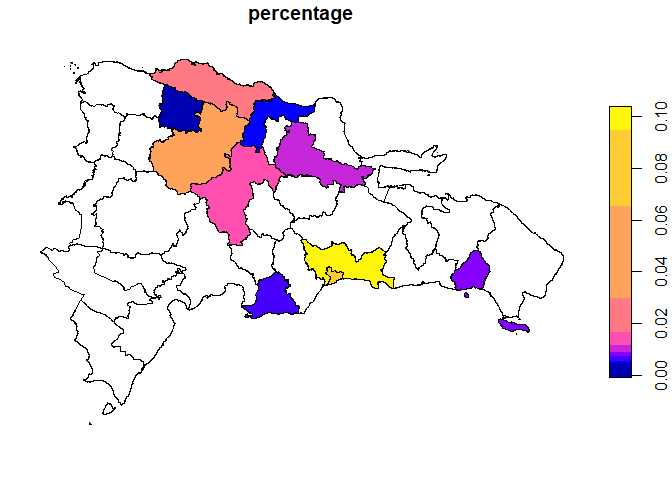

The goal of sfDR is to provide a comprehensive suite of simple feature (sf) objects for the administrative boundaries of the Dominican Republic, facilitating geospatial analysis and mapping.
Installation
You can install the development version of sfDR from r-universe with:
if (!require('sfDR')) install.packages('sfDR', repos = c('https://adatar-do.r-universe.dev'))
if (!require('dplyr')) install.packages('dplyr')
if (!require('ggplot2')) install.packages('ggplot2')Example
This is a basic example showing how to use sfDR to plot a Dominican Republic province map:
Suppose you have a dataset showing the percentage distribution of remittances received in each province of the Dominican Republic for a specific year. To visualize this data using a graph with sfDR, you first need to combine the metadata with the simple features.
DR_PROV_SF <- DR_PROV_SF |>
left_join(dr_province, by = join_by(PROV_ID))
DR_PROV_SF %>%
sf::st_drop_geometry()
#> PROV_ID PROV_CODE PROV_NAME
#> 1 21 SC San Cristóbal
#> 2 14 MTS MarÃa Trinidad Sánchez
#> 3 17 PER Peravia
#> 4 20 SAM Samaná
#> 5 18 PP Puerto Plata
#> 6 11 LA La Altagracia
#> 7 07 EP ElÃas Piña
#> 8 10 IND Independencia
#> 9 16 PED Pedernales
#> 10 03 BAH Baoruco
#> 11 03 BAH Bahoruco
#> 12 04 BAR Barahona
#> 13 26 SRO Santiago RodrÃguez
#> 14 27 VAL Valverde
#> 15 19 HMI Hermanas Mirabal
#> 16 19 SAL Salcedo
#> 17 24 SRA Sánchez RamÃrez
#> 18 13 LV La Vega
#> 19 28 MN Monseñor Nouel
#> 20 31 SJO San José de Ocoa
#> 21 22 SJ San Juan
#> 22 22 SJ San Juan de la Maguana
#> 23 02 AZU Azua
#> 24 25 SAN Santiago
#> 25 25 SAN Santiago de los Caballeros
#> 26 06 DUA Duarte
#> 27 09 ESP Espaillat
#> 28 29 MP Monte Plata
#> 29 30 HMA Hato Mayor
#> 30 12 LR La Romana
#> 31 23 SPM San Pedro de MacorÃs
#> 32 08 ES El Seibo
#> 33 08 ES El Seybo
#> 34 01 DN Distrito Nacional
#> 35 05 DAJ Dajabón
#> 36 32 SD Santo Domingo
#> 37 15 MC Monte CristiThe original simple features dataset only includes the PROV_ID variable. Additional variables are incorporated through the dr_province object.
datos <- DR_PROV_SF |>
left_join(remesas_provincias, by = join_by('PROV_NAME' == 'province'))
datos %>%
sf::st_drop_geometry()
#> PROV_ID PROV_CODE PROV_NAME percentage
#> 1 21 SC San Cristóbal NA
#> 2 14 MTS MarÃa Trinidad Sánchez NA
#> 3 17 PER Peravia 0.005948295
#> 4 20 SAM Samaná NA
#> 5 18 PP Puerto Plata 0.018996422
#> 6 11 LA La Altagracia NA
#> 7 07 EP ElÃas Piña NA
#> 8 10 IND Independencia NA
#> 9 16 PED Pedernales NA
#> 10 03 BAH Baoruco NA
#> 11 03 BAH Bahoruco NA
#> 12 04 BAR Barahona NA
#> 13 26 SRO Santiago RodrÃguez NA
#> 14 27 VAL Valverde 0.004422258
#> 15 19 HMI Hermanas Mirabal NA
#> 16 19 SAL Salcedo NA
#> 17 24 SRA Sánchez RamÃrez NA
#> 18 13 LV La Vega 0.014144396
#> 19 28 MN Monseñor Nouel NA
#> 20 31 SJO San José de Ocoa NA
#> 21 22 SJ San Juan NA
#> 22 22 SJ San Juan de la Maguana NA
#> 23 02 AZU Azua NA
#> 24 25 SAN Santiago 0.039947667
#> 25 25 SAN Santiago de los Caballeros NA
#> 26 06 DUA Duarte 0.008876070
#> 27 09 ESP Espaillat 0.004489833
#> 28 29 MP Monte Plata NA
#> 29 30 HMA Hato Mayor NA
#> 30 12 LR La Romana 0.008441885
#> 31 23 SPM San Pedro de MacorÃs NA
#> 32 08 ES El Seibo NA
#> 33 08 ES El Seybo NA
#> 34 01 DN Distrito Nacional 0.090322521
#> 35 05 DAJ Dajabón NA
#> 36 32 SD Santo Domingo 0.098682428
#> 37 15 MC Monte Cristi NAIt’s important to note that non-ASCII characters can become corrupted when stored in the package, which may affect the merging of the data sets.
We recommend cleaning any errors before performing the merge. We will soon release another package with functions designed to facilitate this process.
datos |>
select(percentage) %>%
plot()
To get the desired graph, just apply the plot function to your data.
Next, we show how to achieve a similar result using ggplot2. This serves to demonstrate how to create maps with both libraries and to highlight the simplicity of the process by integrating everything in one step.